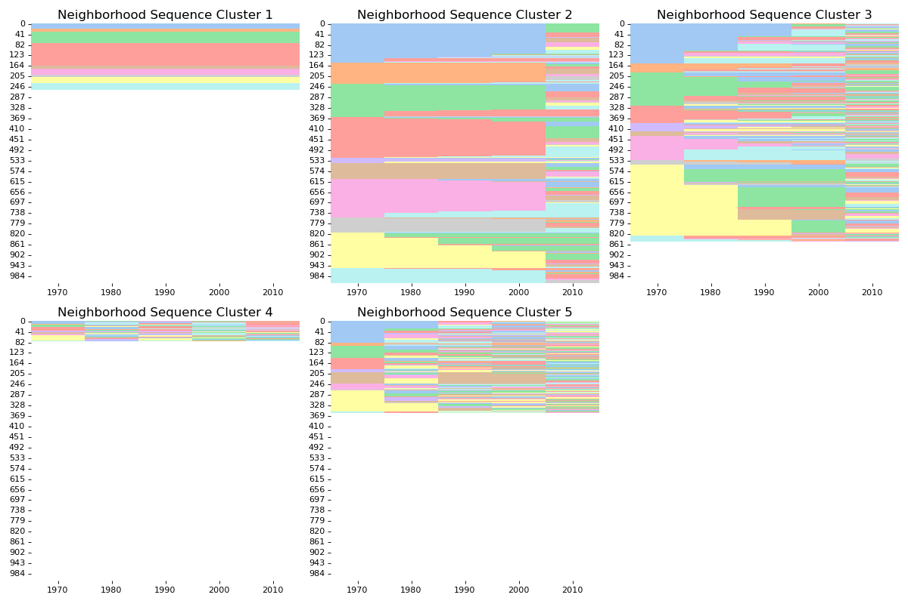

geosnap.visualize.indexplot_seq¶
- geosnap.visualize.indexplot_seq(df_traj, clustering, years=['1970', '1980', '1990', '2000', '2010'], k=None, ncols=3, palette='Set1', save_fig=None, dpi=500)[source]¶
Function for index plot of neighborhood sequences within each cluster.
- Parameters:
- df_traj
dataframe dataframe of trajectories
- clustering
str column name of the sequence clustering to plot.
- years
list, optional column names of cross sections of the neighborhood classifications. Default is decennial census years 1970-2010.
- k
int, optional Number of neighborhood types. If None, k is obtained by inspecting unique values in “years”. Default is None.
- ncols
int, optional number of subplots per row. Default is 3.
- palette
None,str, or sequence, optional Name of palette or None to return current palette. If a sequence, input colors are used but possibly cycled and desaturated. Default is “Set1”.
- save_fig
str, optional path to save figure if desired
- dpi
int, optional the dpi of the saved figure. Deafult is 500
- df_traj
Examples
>>> import pandas as pd >>> from geosnap.visualize import indexplot_seq >>> import matplotlib.pyplot as plt >>> df_LA = pd.read_csv("../../examples/data/LA_sequences.csv", converters={'GEO2010': lambda x: str(x)}) >>> indexplot_seq(df_LA, clustering="seqC1", palette="pastel", ncols=3) >>> plt.show()
(
Source code,png,hires.png,pdf)
{kind=link}
{kind=link}